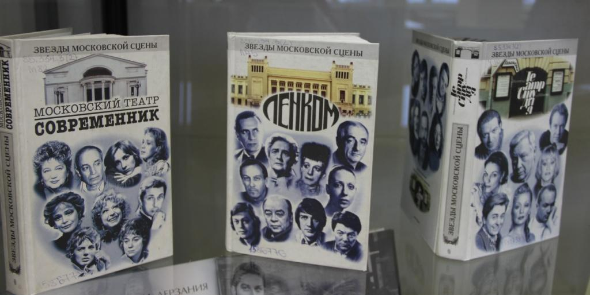

Весь мир - театр

«Весь мир - театр» - обширная экспозиция из фонда библиотеки, интересные издания, посвященные главной теме года. На выставке представлены книги по истории и теории театра: от античности до наших дней.
Несомненный интерес представляют издания, рассказывающие о тонкостях актерской профессии – пластике, гриме, костюмах, сценическом действии. Один из разделов выставки посвящен известным театральным режиссерам, театрам и популярным актерам.
Кроме книг читатели увидят журналы «Театральная жизнь» и «Я вхожу в мир искусств», а также электронные издания из серии «Театр на экране». Особый интерес представляют раритетные записи театральных постановок на виниловых пластинках и художественные альбомы с репродукциями картин на театральные темы.
Дата: 10 октября - 31 октября 2019 г. 13:00 - 21:00
По поводу билетов звонить по телефону: (982) 498-85-43